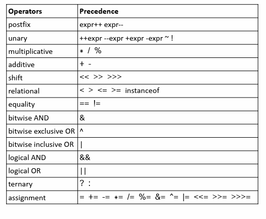

I. Variables (Biến)
Biến
Biến
là một tên gọi được gắn cho một vùng nhớ dữ chứa dữ liệu
Dữ liệu được lưu trữ trong vùng nhớ của biến được gọi là
giá trị
(value)
Có thể truy nhập, gán hay thay đổi giá trị của biến
Khi gắn một giá trị mới thì giá trị cũ sẽ bị ghi đè lên
Cần phải khai báo biến trước khi sử dụng
Khai báo và gán giá trị cho biến
Từ khóa
var
hoặc
let
được dùng để
khai báo
biến
tên biến
dấu bằng (=) được dùng để
gán giá trị
cho biến
Giá trị của biến
5: số/giá trị số nguyên(integer)
5.3: số/giá trị số thập phân(demical)
"Black": giá trị chuỗi(string)
'c': giá trị ký tự(character)
true và false là các giá trị logic (boolean)
Hằng(constant)
Hằng là một tên gọi đại diện cho một giá trị cố định
Giá trị của hằng không thể thay đổi
Giá trị của hằng cần phải được gắn tại thời điểm khai báo
Cú pháp khai báo hằng:
const tên = value;
Ví dụ, sử dụng hằng PI thay cho giá trị 3.14159:
const PI = 3.14159
var area = radius*radius*PI
II. Kiểu dữ liệu (Data Type)
Kiểu dữ liệu là một cách phân loại dữ liệu cho trình biên dịch hoặc thông dịch hiểu các lập trình viên muốn sử dụng dữ liệu
Kiểu dữ liệu mô tả loại dữ liệu sẽ được lưu tron gbiến
Các kiểu dữ liệu khác nhau được lưu trữ trong biến là:
Số (numbers): nguyên, thực, dương, âm
Chuỗi: "Hello"
Ký tự 'A'
Logic: true, false
Một kiểu dữ liệu cung cấp một bộ các giá trị mà từ đó một biểu thức (như biến, hàm,...) có thể lấy giá trị của nó
Trong JS khi khai báo biến và gán cho biến một giá trị đồng nghĩa xác định kiểu dữ liệu cho biến đó.
Chuỗi
Chuỗi bao gồm các ký tự liên tiếp nhau
Có thể khai báo chuỗi sử dụng dấu nháy đơn hoặc nháy kép
Số
Có thể sử dụng số nguyên hoặc số thập phân
Boolean
Kiểu dữ liệu boolean chỉ có hai giá trị là true và false
Tất cả mọi thứ có giá trị đều là true
Tất cả mọi thứ không có giá trị đều là false
kiểu null
: có duy nhất một giá trị
null
Kiểu underfind
: một biến chưa được gán giá trị có giá tị
underfind
IV. Toán tử toán học
Toán tử là các ký hiệu được sử dụng để thực hiện các thao tác trong các biểu thức và sinh ra kết quả cuối
Có nhiều loại toán tử khác nhau
Toán tử toán học
Toán tử gán
Toán tử cộng chuỗi
Toán tử so sánh
Toán tử logic
Toán tử typeof
Toán tử toán học
Toán tử toán học được sử dụng trong các biểu thức toán học
Toán tử toán học được sử dụng trên các giá trị số( hoặc là các biến kiểu số)
Toán tử toán học thông thường có 2 toán hạng
Ví dụ: 100 + 50
100, 50 là toán hạng còn dấu (+) là toán tử
Các loại toán tử: cộng (+), trừ (-), nhân (*), chia (/), chia lấy dư (%), tăng 1 giá trị (++), giảm 1 giá trị (--)
Sử dụng được với giá trị, biến và biểu thức
Toán tử gán (assignment)
Toán tử gán được sử dụng để gán giá trị cho một biến
Toán tử gán có thể sử dụng với tất cả các kiểu dữ liệu
Các loại toán tử gán:
x = y
x += y | x = x + y
x -= y | x = x - y
x *= y | x = x * y
x /= y | x = x / y
x %= y | x = x % y
Toán tử cộng chuỗi (string concatenate)
Toán tử cộng chuỗi được sử dụng để nối hai chuỗi
Có thể nối chuỗi với số
Toán tử so sánh
Toán tử so sánh được sử dụng để đánh giá mức độ tương quan giữa các giá trị
== | equal to (bằng)
=== | equal value and equal type
!= | not equal (khác)
!== | not equal and not value
greater than (lớn hơn)
less than (bé hơn)
less than or equal to (lớn hơn hoặc bằng)
less than or equal to (bes hơn hoặc bằng)
Toán tử logic (logical)
Toán tử logic được dùng trong các biểu thức logic (true/false)
&& là toán tử "và"
|| là toán tử "hoặc"
! là toán tử "phủ định"
Toán tử typeof
Toán tử typeof được dùng để lấy giá trị về kiểu giá trị của một biến hoặc giá trị
Độ ưu tiên của các toán tử
Trong một biểu thức có nhiều phép toán thì chúng sẽ lần lượt đánh giá dựa vào độ ưu tiên
Có thể sử dụng dấu ngoặc () để thay đổi độ uu tiên của các toán tử
Các toán tử có cùng độ ưu tiên thì sẽ thực hiện từ trái qua phải
